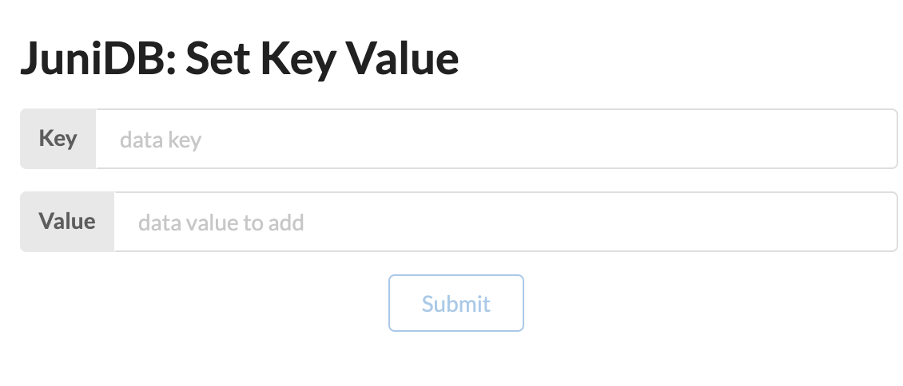
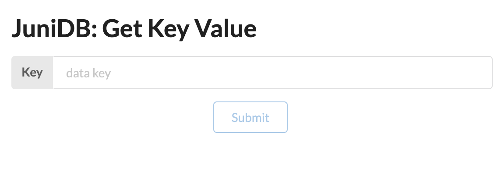

Introduction
JuniDB is a Substrate database powered by offchain::ipfs.
By using IPFS power in the native Substrate runtime, and by allowing pass-through wasm calls via Substrate's Off-chain Workers, we enable a powerful tool to store data in KEY-VALUE model:
set- store data with specific key to DBgey- Read data from DB by provided key
Manual have updated to Sybstrate v3 by: @andskur and Uddùg team
Disclaimers
You should still consider this an alpha preview.
Getting Started
You can get up and running in about 15 minutes by:
Using the Docker image
The recommended way to use JuniDB is via the docker image.
Installing the image
# Pull the image from Docker Hub
$ docker pull andskur/juni-db:latest
The image comes with binary. The substrate binary does not have our offchain-ipfs
pallets to interact with the IPFS node, instead you can connect to it through its multiaddr.
The image exposes ports 9944 for WebSockets, 9933 for RPC, 30333 for p2p, and 9615 for
Prometheus.
Running the image
The default command for the image is:
node-template --ws-external --rpc-external --base-path=/offchain-ipfs --dev
Run the default with dev chain like so:
docker run -p 9944:9944 \
-p 9933:9933 \
-p 30333:30333 \
-p 9615:9615 \
-it \
--rm \
--name node-template \
andskur/juni-db:latest
This will work with any arguments you'd normally pass to substrate
Persistent Storage
To run with persistent storage volume between containers, first create a volume:
docker volume create junidb-vol
Then add -v junidb-vol:/junidb to the docker run commands above.
Previewing the functionality in a UI
If you’re looking for a quick demo of the functionality, the simplest thing to do after running the Docker container's default command is to launch the juni-ui UI.
Instructions
-
If you have node.js and yarn installed on your machine, run the following commands:
git clone https://github.com/uddugteam/juni-ui cd juni-ui yarn install yarn start -
Once the UI opens in your browser you will see a JuniDB block at the top.

-
For add new data to database you should write key and value in Set Key Value form fields and click to submit button.
 -
Then, to query data by field you should write key in Get Key Value form.

Testing
For application testing just run:
# Build substrate and run unit & integration tests
$ TRYBUILD=overwrite cargo test
For manual testing please use out Getting started guide